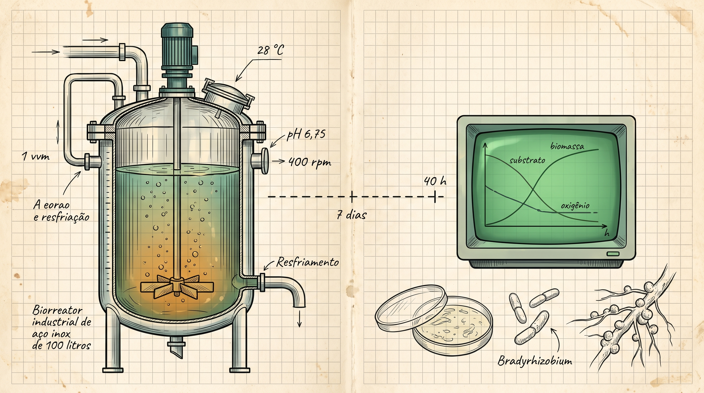
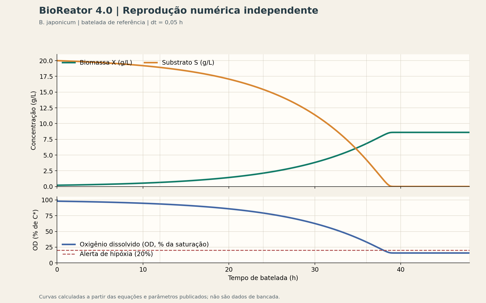

40 horas contra 7 dias: o que o BioReator 4.0 acerta e o que ainda separa a tela do tanque
Biomassa vai crescendo, Monod dá a direção,
substrato vai descendo, passo a passo da equação.
Quarenta horas na tela, sete dias na lida,
mas curva e fermentação não têm a mesma medida.
se o oxigênio cai e a taxa segue igual,
a conta mostra o limite do modelo digital.
Sem UFC medida, não se atesta produção;
simular ensina o processo, não substitui validação.
A pergunta: dá para ler uma fermentação antes de ir para a planta?
Conseguimos antecipar as curvas de biomassa, substrato e oxigênio de uma batelada de inoculante de soja? É uma pergunta útil em engenharia química e bioprocessos, sem confundir simulação com previsão industrial.
Partimos do BioReator Community 1.0.0, publicado em 10 de outubro de 2026 para Windows. O aplicativo usa JavaFX e SQLite local: a batelada, o histórico e a exportação CSV ficam no computador. O organismo configurado é B. japonicum. Nossa análise combina a leitura do programa em 26,1 horas com uma reprodução independente das equações; não realizamos uma fermentação física para este artigo.
A curva avalia a lógica do simulador, não valida seu uso no controle de processo nem certifica um bioinsumo.
O modelo por dentro
O crescimento segue a cinética de Monod, limitada pelo substrato. Em cada passo, o simulador atualiza a biomassa (X) e o substrato (S); em paralelo, calcula o oxigênio dissolvido (CL) pelo balanço entre transferência a partir do gás e consumo da cultura. A integração de X e S usa Euler explícito com passo de 0,05 h.
μ = μmax × S / (Ks + S)
dX/dt = μ × X
dS/dt = −μ × X / Yx/s
dCL/dt = kLa × (C* − CL) − qO2 × 1000 × X
As unidades do consumo de oxigênio são convertidas de g para mg. A reprodução integra o balanço rápido de oxigênio com atualização estável, pois um Euler explícito de 0,05 h não é estável para kLa = 157 h−1.
Na Community, os parâmetros do perfil são μmax = 0,10 h−1, Ks = 0,25 g/L, Yx/s = 0,42 g/g, qO2 = 0,12 g O2/(g·h) e C* = 7,8 mg/L. São valores configurados no simulador, não constantes universais da espécie. O tanque de referência tem 100 L nominais e 75% de volume útil; opera a 1 vvm e 400 rpm, com impelidor Rushton e Np = 5. A temperatura (28 °C) e o pH (6,75) são parâmetros observados. A carga inicial é X0 = 0,2 g/L e S0 = 20 g/L.
Para a transferência de oxigênio, o console usa a correlação de van’t Riet: kLa = 0,026 (P/V)0,4 vs0,5. Com as condições de referência e conversão para h−1, estima kLa em 157 h−1. É uma estimativa empírica, sensível ao meio e às condições de aeração; não é uma medição no tanque. A correlação original é referência clássica para sistemas gás-líquido não viscosos, não garantia de escala industrial.
O teste: o que a curva realmente reproduz
Rodamos o programa em Windows. Na leitura registrada em t = 26,1 h, a tela mostrava X = 2,61 g/L, S = 14,27 g/L e OD = 75%. Em paralelo, reproduzimos os balanços em Python, com os mesmos parâmetros e passo de Euler para X e S. Em 24 h, obtivemos X = 2,12 g/L, S = 15,42 g/L e OD próximo de 79%: os valores acompanham a mesma trajetória e confirmam que as equações publicadas representam o comportamento observado na tela.
A tabela é a reprodução independente; os pontos finais mostram o encerramento matemático, não uma recomendação de colheita.
| Tempo (h) | Biomassa X (g/L) | Substrato S (g/L) | OD (% da saturação) |
|---|---|---|---|
| 0 | 0,20 | 20,00 | 100% |
| 12 | 0,65 | 18,92 | 94% |
| 24 | 2,12 | 15,42 | 79% |
| 36 | 6,82 | 4,24 | 33% |
| 48 | 8,60 | 0,00 | 16% |

No modelo, o alerta de OD abaixo de 20% aparece por volta de 38 h; o substrato se esgota em aproximadamente 39,4 h e X estabiliza perto de 8,6 g/L. O rendimento fecha pela relação imposta entre X e S. Isso demonstra consistência interna dos balanços; não demonstra que uma cultura real produziria 8,6 g/L de biomassa viável.
Onde a tela diverge da planta
O título contrapõe cerca de 40 horas no simulador à janela de 5 a 7 dias adotada como referência prática neste roteiro; não são ensaios equivalentes, e a duração real depende da cepa, do meio e do critério de colheita. Figueiredo e colaboradores observaram 105 células/mL após 72 horas a 28 °C em uma condição específica, evidência de que tempo, sozinho, não define qualidade. Inoculantes requerem avaliação de células viáveis por contagem microbiológica, que o BioReator não calcula.
A diferença principal está nas hipóteses. Primeiro, a falta de oxigênio não reduz μ: OD cai e o aviso de hipóxia pode acender, mas o crescimento continua seguindo Monod enquanto houver substrato. Na planta, oxigênio é um recurso metabólico, não apenas uma variável de painel; limitação pode alterar crescimento e rendimento.
Segundo, temperatura e pH são vigiados, mas não modificam a taxa de crescimento. O perfil fica em 28 °C e pH 6,75, sem representar resposta a desvios, adaptação ou estresse. Terceiro, não há fase lag, morte celular, produção de espuma ou balanço de CO2. O modelo também não estima UFC/mL. Biomassa em g/L não pode ser convertida diretamente em células viáveis: tamanho, estado fisiológico, agregação e viabilidade fazem diferença.
Há ainda um limite de engenharia: o cálculo de kLa usa potência de agitação não aerada. A presença de gás altera a potência efetivamente transferida; por isso, a estimativa tende a superdimensionar a transferência em certas condições. O valor de 157 h−1 serve para explorar o modelo, não substitui medição nem validação de escala.
Também não se deve interpretar o platô de OD perto de 16% após o consumo do substrato como sinal de lote pronto. É uma consequência da equação: X permanece no tanque, o consumo de O2 continua associado a ela e não há termo de morte que faça a demanda cair. Na planta, a leitura de OD e a tomada de decisão dependem de medições, protocolo e contexto microbiológico.
Roadmap: oito passos entre o simulador e um modelo mais útil
O próximo avanço não é aumentar casas decimais, mas representar os mecanismos que hoje ficaram de fora. O handoff do simulador organiza oito melhorias:
- Separar respiração para crescimento e manutenção com um termo do tipo Pirt no consumo de O2.
- Fazer a limitação por oxigênio afetar a taxa de crescimento.
- Acrescentar respostas cardinais de temperatura e pH.
- Encerrar automaticamente a batelada por critérios explícitos.
- Reajustar o perfil de referência para uma janela de 5 a 7 dias, quando apoiada por protocolo definido.
- Estimar UFC/mL — com validação experimental, não por simples conversão de g/L.
- Recalcular kLa considerando potência sob aeração.
- Representar fase lag e morte celular.
A edição Premium está prevista para 18 de junho de 2027. Até lá, professores podem usar a Community em aula para discutir Monod, rendimento e transferência de oxigênio. Se tiverem curvas reais, com cepa, meio, temperatura, pH, aeração e método de contagem descritos, convidamos a enviá-las pelo canal de feedback. Uma curva sem contexto não valida um modelo; dados comparáveis podem orientar sua próxima revisão.
Um simulador honesto é um bom começo
O BioReator 4.0 Community é transparente o bastante para ensinar balanços de massa, cinética de Monod e transferência de O2 em um ambiente local, sem esconder as equações atrás de uma nuvem. É uma boa bancada didática para experimentar parâmetros e perguntar o que muda na curva.
Ainda não substitui a bancada, a contagem de viáveis nem o acompanhamento de um lote real. Dizer isso não diminui o simulador; define com precisão o que ele entrega e onde precisamos melhorar. Na engenharia de bioprocessos, reconhecer o limite do modelo é parte do resultado — e parte do que torna possível confiar nele.
Referências e leitura do produto
- van’t Riet, K. “Review of Measuring Methods and Results in Nonviscous Gas-Liquid Mass Transfer in Stirred Vessels.” Industrial & Engineering Chemistry Process Design and Development, 18(3), 357–364 (1979). doi:10.1021/i260071a001.
- Figueiredo, M. V. B. et al. “Survival of Bradyrhizobium sp. under different growth temperatures and relationship with the longevity of inoculant.” Pesquisa Agropecuária Brasileira, 30 (1995). doi:10.1590/S1678-3921.pab1995.v30.4419.
- Ministério da Agricultura, Pecuária e Abastecimento. Instrução Normativa SDA/MAPA nº 13/2011, requisitos aplicáveis a inoculantes. Consultar o texto consolidado e atualizações antes de aplicar qualquer limite regulatório.
Produto: BioReator 4.0 · edições e download · release Community 1.0.0 · fundamentos do bioprocesso.
Hashtags
Contato
- Produto e download: BioReator 4.0 · edições
- Feedback: canal de feedback
- E-mail: suporte@caracore.com.br
- LinkedIn: Cara Core Informática
Transparência sobre os limites também faz parte da engenharia.
Artigo publicado em 18 de julho de 2027
© 2027 Cara Core Informática. Todos os direitos reservados.